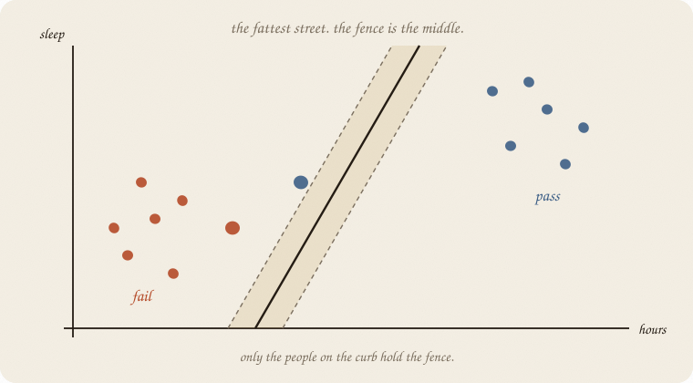
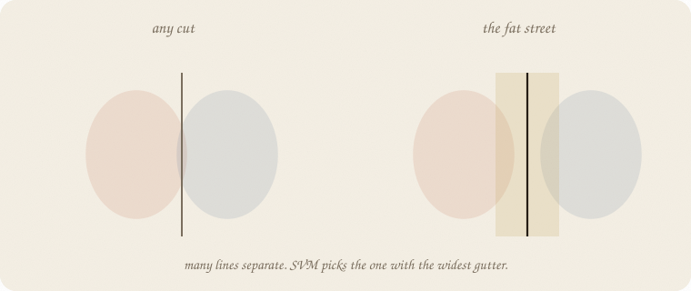
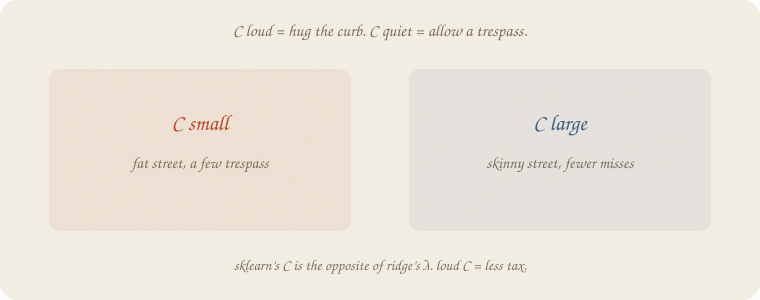
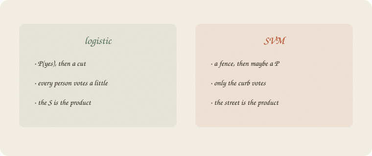
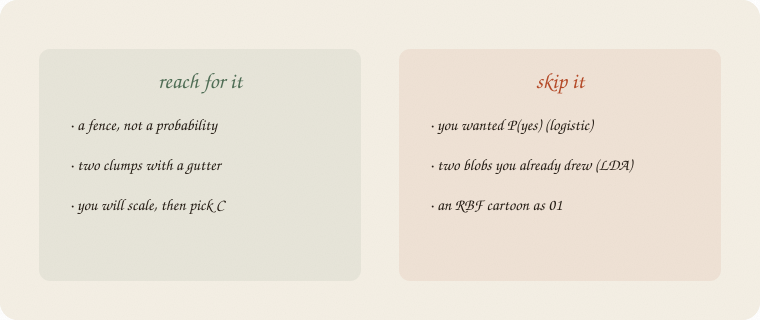

datazines · a sketchbook

Read 01 logistic regression and 02 LDA first. Same exam. Same hours and sleep. Same eighty pass/fail students, seed 7 — not ridge’s thirty graders. Logistic wanted P(yes). LDA drew two blobs. This notebook wants a fence, and the widest gutter it can get.
This is 04 of classification. Short. A kernel (RBF) is a later door, not 01.
Flip it like a notebook. One page = one idea. Done.
Logistic: score, squash, P(pass), then a 0.5 cut. The cut is extra politics (03 metrics).
LDA: two ovals. The set of points equally close to both centers is a line.
Many lines separate fail from pass. Some graze a passer. Some leave a fat empty strip.
SVM asks a different question:
which fence has the widest street on both sides?
People call the street a margin. The fence sits in the middle. Ugly name. Friendly job: fattest gutter.

Left: any line that happens to split. Skinny. A new student a little off the old cloud crosses it by accident.
Right: push the line until both curbs are as far as they can be. The gutter is the product.
Hours still does the separating. Sleep barely moves — same story as LDA’s centers (fail ~2 h, pass ~4 h). The picture is a street along hours, not a blob religion.
You do not need P(yes) to draw this. You need two clumps and a gap.
Fit the fence. Most people sit deep in fail or deep in pass. They do not touch the street. Move them a little and the fence does not move.
The people sitting on the dashed curbs hold the fence. Push one of those, the street tilts.
People call them support vectors. That is the whole name: the machine is those vectors. On our 56 trainers, a linear SVM keeps 12 fail + 12 pass = 24. The other 32 are decoration.
Logistic: every person tugs the S a little. SVM: the interior is silent.
The street is a dream. Real clouds overlap. Someone will stand in the gutter.

C (sklearn’s name) is how loudly you punish a trespass.
Ridge’s λ was “how loud is the tax.” Loud C is the opposite: less tax. Do not mix the letters. Scale first — hours and sleep are different units; the street cares about spelling, same sermon as ridge.

Logistic’s product is an S. Output is a probability. Then you cut.
SVM’s product is a fence. Output is which side. You can glue a probability on later. That is extra. The machine did not owe you one.
On this exam they almost agree. New student: 3 hours, 7 sleep. Logistic P(pass) 0.69. Linear SVM says pass. Same call, different religion.
LDA still owns the two-blob story. SVM does not need ovals. It needs a gutter.
A kernel (RBF) bends the street without drawing a QDA oval. Later door. Not this file. On these eighty people, RBF tied logistic on test — no miracle curve today.
n_support_), not every person.If you keep only one thing:
fattest street. fence in the middle. only the curb holds it.
Same eighty as logistic / LDA. Hours and sleep, pass/fail. House seed 7. Split 70/30, random_state=0. Linear SVM vs logistic. Count who holds the fence.
import numpy as np
from sklearn.svm import LinearSVC, SVC
from sklearn.linear_model import LogisticRegression
from sklearn.model_selection import train_test_split
from sklearn.pipeline import make_pipeline
from sklearn.preprocessing import StandardScaler
rng = np.random.default_rng(7)
n = 80
hours = rng.uniform(1, 6, n)
sleep = rng.uniform(4, 9, n)
tutor = (rng.random(n) > 0.6).astype(float)
z = -3.2 + 1.05 * hours + 0.25 * (sleep - 6.5) + 0.7 * tutor
passed = (rng.random(n) < 1 / (1 + np.exp(-z))).astype(int)
X = np.column_stack([hours, sleep])
Xtr, Xte, ytr, yte = train_test_split(X, passed, test_size=0.3, random_state=0)
log = LogisticRegression().fit(Xtr, ytr)
svm = make_pipeline(StandardScaler(), LinearSVC(C=1, dual="auto", random_state=7)).fit(Xtr, ytr)
svc = make_pipeline(StandardScaler(), SVC(kernel="linear", C=1, random_state=7)).fit(Xtr, ytr)
print("n train", len(ytr), " n test", len(yte))
print("logistic acc train/test", round(log.score(Xtr, ytr), 3), round(log.score(Xte, yte), 3))
print("logistic hours, sleep", np.round(log.coef_[0], 3).tolist())
clf = svm.named_steps["linearsvc"]
print("LinearSVC C=1 acc train/test", round(svm.score(Xtr, ytr), 3), round(svm.score(Xte, yte), 3))
print("LinearSVC hours, sleep", np.round(clf.coef_[0], 3).tolist())
m = svc.named_steps["svc"]
print("SVC linear C=1 acc train/test", round(svc.score(Xtr, ytr), 3), round(svc.score(Xte, yte), 3))
print("support vectors fail, pass", m.n_support_.tolist(), " of", len(ytr))
print("3h, 7s log P(pass) =", round(log.predict_proba([[3, 7]])[0, 1], 2),
" SVM pred =", int(svm.predict([[3, 7]])[0]))
n train 56 n test 24
logistic acc train/test 0.857 0.875
logistic hours, sleep [1.69, 0.421]
LinearSVC C=1 acc train/test 0.857 0.875
LinearSVC hours, sleep [0.987, 0.237]
SVC linear C=1 acc train/test 0.875 0.833
support vectors fail, pass [12, 12] of 56
3h, 7s log P(pass) = 0.69 SVM pred = 1
LinearSVC ties logistic on this test (0.875). Hours still louder than sleep. SVC(kernel="linear") is the same street with an extra gift: 24 support vectors of 56. The curb, counted. C=1 is a default, not a moral. LinearSVC has no predict_proba — the fence did not owe you an S. New student 3 h, 7 sleep: pass, same as logistic’s 0.69.
Scale is in the pipeline. Unscaled, sleep’s units fight hours, same sin as unscaled ridge.
| word | meaning |
|---|---|
| street / margin | empty strip on both sides of the fence |
| fence | the middle of the street |
| support vector | a person on the curb; they hold the fence |
| C | how loudly you punish a trespass (loud = hug) |
| LinearSVC | the linear street, sklearn’s fast fence |
| kernel | a later bend; not this file |
Also called: street = margin · fence = decision boundary · curb-sitter = support vector · C = inverse of a tax.

Reach for it when you want a fence, not a probability; two clumps with a gutter; you will scale, then pick C.
Skip it when you wanted P(yes) (01 logistic regression); two blobs you already drew (02 LDA); questions and rectangles (01 decision tree); an RBF cartoon as 01.
Pays you: a picture of the gutter. A shortlist of people who actually hold the line. Often ties logistic on a straight smear.
Costs you: no P(yes) unless you glue one on. C to pick. Scale, always. A kernel is extra religion — not a first file.
Classification 04. A fence, not an S. Next: the coin’s cousin — beta — then a prior.
Flip it like a notebook. One page = one idea.